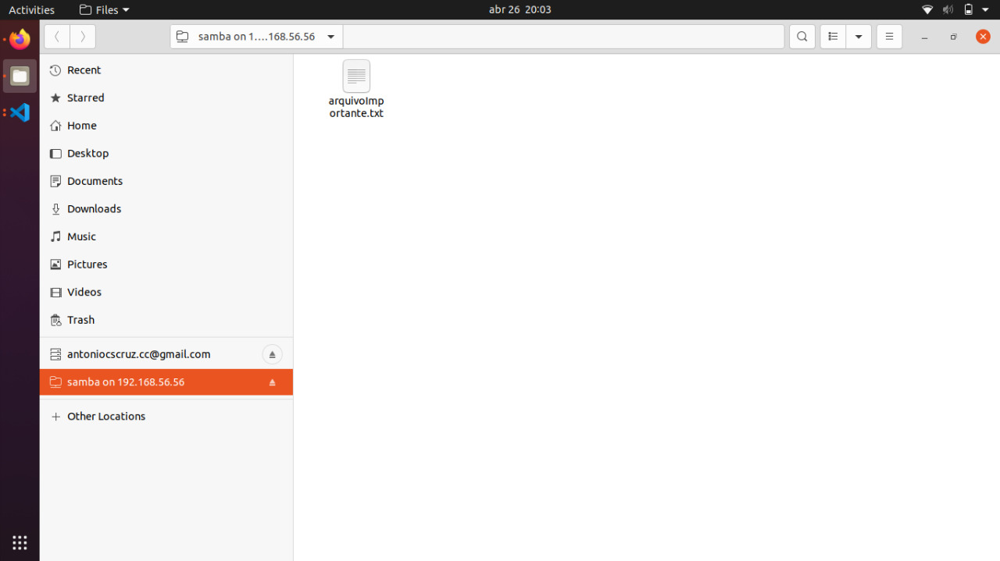

Pre-requisitos para provisionar o servidor samba com vagrant + ansible.
Insale o vagrant usando o comando "apt install vagrant".
Instale o virtualbox usando o comando "apt install virtualbox".
Instale o ansible usando o comando "apt install ansible".
Passos para provisionar uma box usando vagrant com ansible
Crie um vagrant file com as configurações iniciais da box desejada e defina que o provisionamento
será feito com o ansible e defina o playbook utilizando o seguinte comando:
(box).vm.provision "ansible", playbook: "provisioning/samba.yml"
Crie o playbook para ser utilizado na box utilizando a extensão .yml como nos arquivos disponibilziados no github Clique Aqui
Levante a box utilizando o comando vagrant up.
Acessando Servidor Samba:
Abra o gerenciado de arquivos e na barra de pesquisa digite: smb://192.168.56.56/samba/
Após localizar, será solicitado dados de acesso:
Usuário = vagrant e Senha= 123.

O diretório Samba é um diretório apenas de leitura, não sendo possível alterar seu conteúdo, pois foi assim configurado no Playbook, porém essa confiração pode ser alterada
Além do que foi criado, o servidor Samba pode ser configurado de diversas formas, criando mais diretórios compartilhados e definindo usuários conforme necessidade de acessos
Para mais informações sobre o servidores Samba: clique aqui
OBS: O código fonte deste projeto está comentado, assim poderá ter entendimento do mesmo.